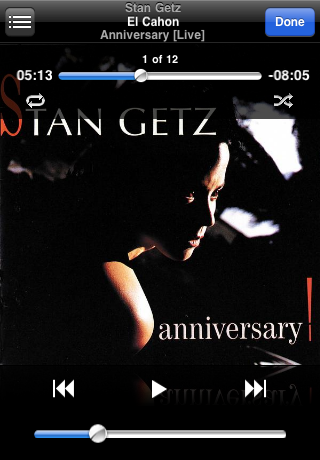
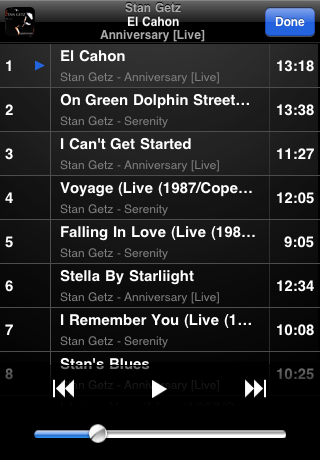
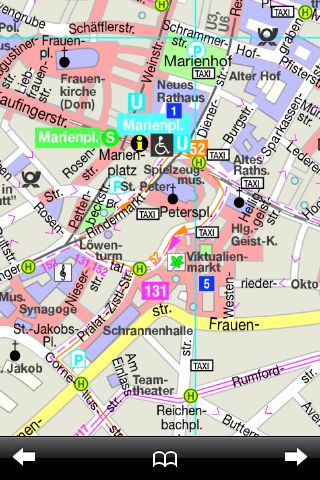
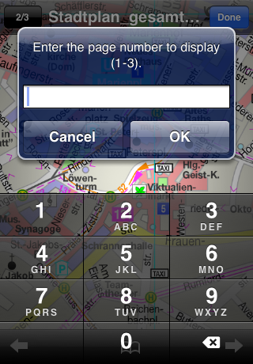
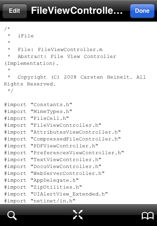
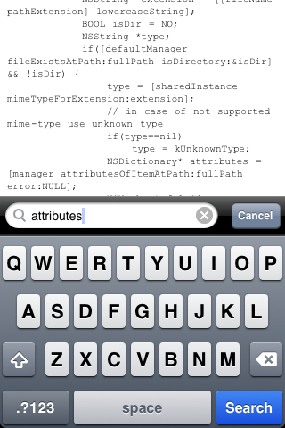
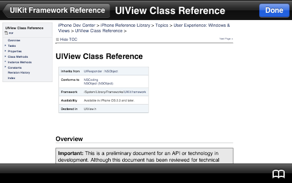
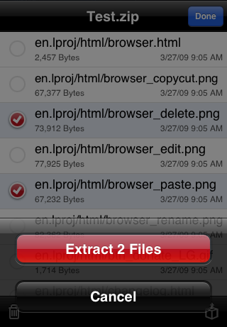
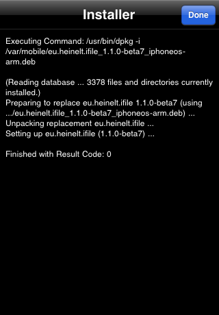

-
Vizualizatorul de fișiere
iFile îți permite a vizualiza un număr de fișiere cu vizualizatori specifici. Toate vizualizatoarele - separat de player-ul de filme si cel audio - toate funcționează în modul portret și peisaj.
Filme
Următoarele formate video sunt acceptate de iFile:
- mov, mp4, mpv, m4v, 3gp
Fișierele video sunt rulate folosind iPhoneOS Multimedia Player. Ieșire la TV este suportată cu cablu Apple TV.
Muzică
Următoarele formate audio sunt acceptate de iFile:
- aac, aiff, aif, aifc, amr, alac, caf, m4a, m4r, mp2, mp3, mpga, pcm, snd, wav, wma
Player-ul audio are o interfață similară cu cea al player-ul iPod. Coperta albumului vor fi citite direct din fișierele m4a sau din o copertă .jpg sau un director .jpg conținând directorul asociat cu un fișier audio.
 Permite să rulezi si liste de redare de formatul m3u și fișierele dintr-un director. Vor rula și fișiere găsite cu funcționalitatea de căutare.
 PDF
Pentru a vedea PDF-uri cu vizualizatorul este disponibil în iFile care care permite să mergi la pagina următoare sau anterioare și să mergi direct la o pagină specifică apăsând butonul
 din colțul stâng sus.
Acest buton arată numărul pagini curente și numărul total de pagini.
Vizualizatorul permite măriri foarte mare.
din colțul stâng sus.
Acest buton arată numărul pagini curente și numărul total de pagini.
Vizualizatorul permite măriri foarte mare. Alerta următoare îți permite să introduci numărul unei pagini valide din documentul PDF ca să o vizualizezi.
 O singură atingere pe documentul PDF vizualizatorul va ascunde bara de status și navigație. Cu o atingere dublă vizualizatorul va mări sau va micșora cu factorul 2.
Text
Pentru a vizualiza și edita text un vizualizator specific este folosit care utilizează un font mic ca cel folosit de un vizualizator de web. Acesta permite o bună vizualizare a codului sursă a fișierelor. Vizualizatorul de text permite a citi și a scrie multiple tipuri de fișiere text inclusiv HTML și fișiere property list (plist). Fișiere property list sunt suportate în format XML sau binar. Când fișierele conțin tabulatori, tabulator-ile vor fii înlocuite cu spații în timpul citiri și vice versa în timpul scrieri. Altfel, iPhoneOS UITextView va ascunde tabulator-ul. Mărimea tabulator-ului poate fi setată în Preferințele iFile. Fișierele text sunt tot timpul citite în codarea UTF-8. Dacă acesta nu reușește ele sunt citite în codarea ISO-Latin.
 Cu o atingere pe
 vizualizatorul va ascunde bara de navigație și de status. Dacă apeși pe
vizualizatorul va ascunde bara de navigație și de status. Dacă apeși pe
 va arăta bările din nou. Apăsând
va arăta bările din nou. Apăsând
 vei putea căuta textul introdus în câmpul de căutare. Vizualizatorul
va arăta textul găsit în centrul ecranului.
vei putea căuta textul introdus în câmpul de căutare. Vizualizatorul
va arăta textul găsit în centrul ecranului. Word, Excel, Powerpoint, Pages, Numbers, Keynote, HTML
Ca și în Mobile Safari poți să vizualizezi fișiere Microsoft Word, Excel, și Powerpoint, Apple Pages, Numbers și Keynote cât și orice alt fișier HTML folosind iPhoneOS Web View.
 O singură atingere pe documentul, vizualizatorul va ascunde bara de status si navigație.
Imagini
Imaginile sunt afișate pe tot ecranul cu posibilitatea de a le mări. Poți să mergi la poza anterioară sau precedentă din același director ca și poza curentă. Dacă apeși butonul
 imaginea curentă va fii adăugată la Rola film al dispozitivului.
imaginea curentă va fii adăugată la Rola film al dispozitivului.ZIP
Cu vizualizatorul ZIP poți să vezi și să folosești conținutul unui fișier ZIP. Vizualizatorul arată toate fișierele inclusiv numele directoarelor. Dacă vrei să ștergi fișiere selectate din fișierul ZIP, apasă butonul
 și confirmă. Pentru a extrage toate fișierele (nimic selectat) sau fișierele
selectate, apasă butonul
și confirmă. Pentru a extrage toate fișierele (nimic selectat) sau fișierele
selectate, apasă butonul
 și confirmă.
și confirmă. Debian Installer
iFile poate instala fișierele pachet Debian (deb).
